前端 Web UI 与原型设计对比报告
- 对比日期：2026-11-11
- 分支：
ui-vs-prototype-audit（基于 main @a7126e9） - 原型基线：
prototype/index.html（M1-02，本地无头 Chrome 1520×940 渲染截图） - 线上环境：http://47.98.144.243:8080/（真实账号登录，无头 Chrome 同尺寸截图）
- 截图目录：
reports/2026-11-11/ui-vs-prototype/shots/（proto_*.png= 原型，live_*.png= 线上）
重要背景：线上总览页显示“M3 建设中”横幅。本地 main 已合入 M5/M6（评测向导 v2、结果工作台、轨迹采集等）的页面代码，但线上部署版本疑似落后于 main。因此下文部分“缺失”可能是部署滞后而非代码未实现，已逐条标注，建议先核实部署版本再排期。
1. 已开发 issue 特性与页面覆盖
本次分析的已开发 issue（.agents/flow/issues/）中，与前端页面直接相关的特性：
| 域 | Issue | 原型页面 | 线上页面 | 状态 |
|---|---|---|---|---|
| 身份 | m3-05 账号认证 | 登录 #/login |
/login |
✅ 高度一致 |
| 总览 | m3-01~03 | 总览 #/overview |
/overview |
⚠️ 指标缩水 |
| 数据集 | m3-01 SWE-bench 导入与指标 | 目录/详情/导入 | /datasets* |
❌ 结构性差异 |
| 模型凭据 | m5-02 | 模型凭据 #/models |
/models |
✅ 骨架一致 |
| Agent 资产 | m5-01 | Agent 资产 #/assets |
/assets |
⚠️ 空态，源卡片结构未验证 |
| 资源池 | m5-03 / m4-03 | 资源池 #/resources |
/resources |
⚠️ 表达重组 |
| 评测任务 | m3-04 / m5-04 / m5-05 | 列表/发起/详情 | /evals* |
❌ 详情退化为 Drawer |
| 轨迹 | m6-05 轨迹查看器 | 会话轨迹 #/trace/* |
无路由 | ❌ 整页缺失 |
| 交付 | m2-02 | 交付流水线 #/deployment |
/deployments 占位页 |
❌ 占位 |
| 运维 | m3-06 | —（原型无独立页） | /operations（新增，管理员） |
➕ 线上增量 |
2. 登录页 — 还原度最高 ✅
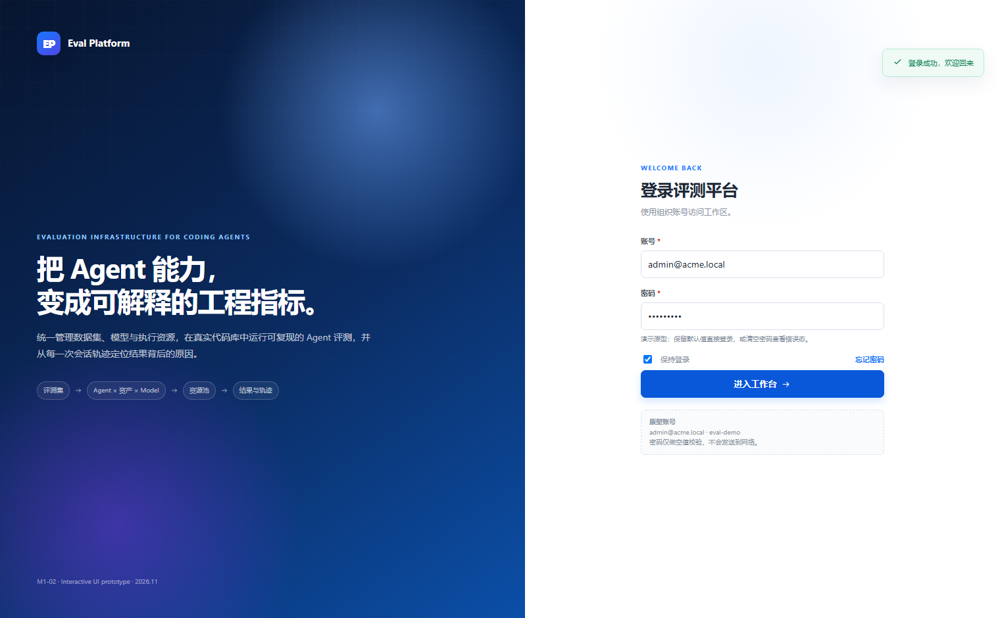
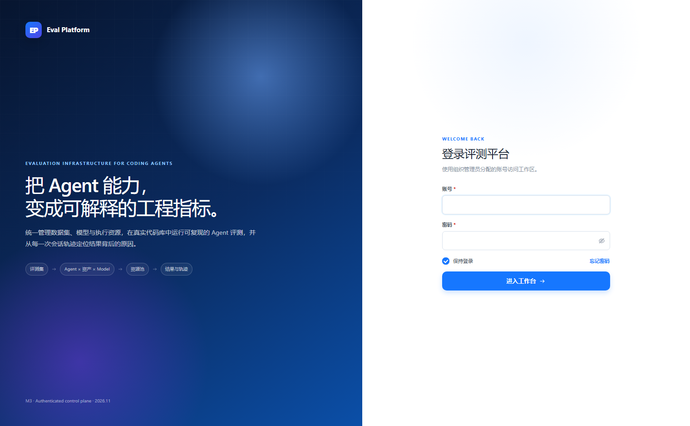
- 一致：双栏品牌区/表单区、“保持登录”、忘记密码、流程标签全部保留。
- 差异（均低）：原型预填演示账号并有演示提示框（线上为真实认证，合理删减）；线上新增密码可见性切换；页脚里程碑语义从 M1-02 更新为 M3。
3. 总览页 ⚠️
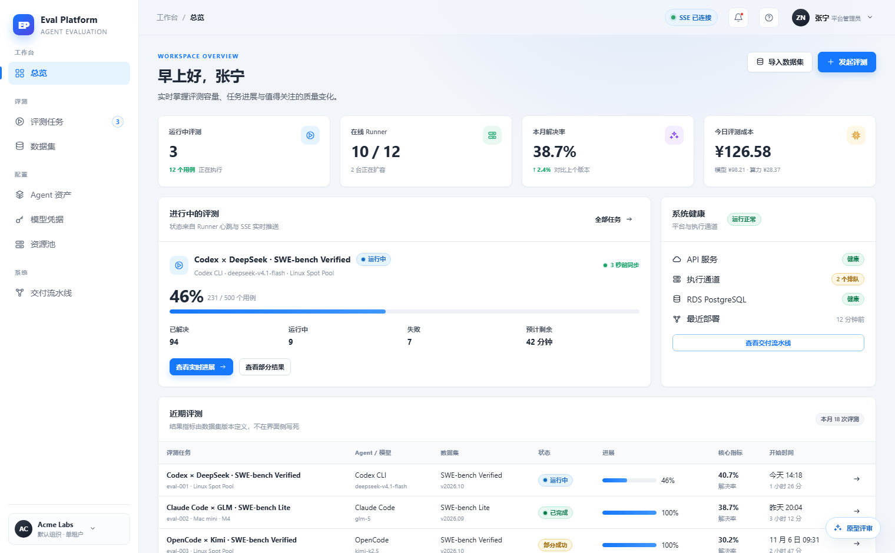
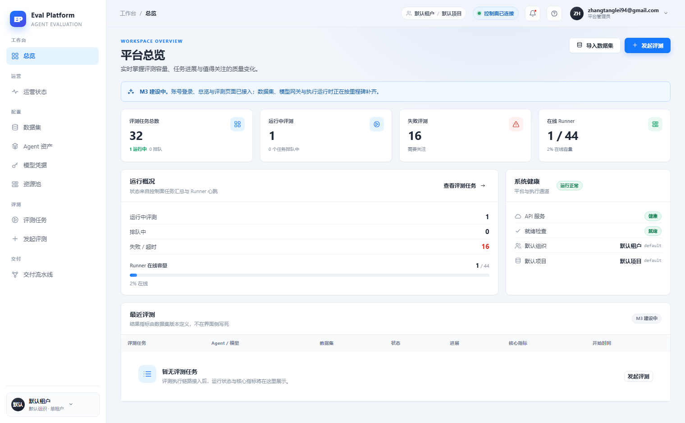
- 一致：4 张 KPI 卡布局、系统健康侧栏、最近评测表列结构、导入数据集 + 发起评测双按钮。
- 差异：
- 【中】原型 KPI 含本月解决率 / 今日评测成本；线上换成任务总数/运行中/失败/Runner 在线，结果指标体系未接入（与“M3 建设中”横幅自洽，属阶段性未完成）。
- 【中】原型“进行中的评测”单运行详情卡（进度 46%、预计剩余、实时进展入口）被“运行概况”汇总列表替代，运行中任务快速下钻路径缺失。
- 【低】线上“最近评测”空态文案与 KPI “32 个任务”不自洽；侧边栏新增“运营状态/发起评测”入口（增强）。
4. 数据集域 — 差异最严重 ❌
4.1 目录页


- 【严重】原型为适配器驱动的卡片目录（任务族标签、环境形态、核心指标、接入状态、筛选 Tab、搜索、分页）；线上退化为 5 列简单表格（名称/slug/适配器/版本数/创建时间），无任何筛选/分页/状态标签。
- 【中】原型顶部 4 张统计卡（目录类型/已接入版本/用例总量/待接入）与“适配器规范”按钮缺失。
- 【中】信息架构变化：原型数据集在“评测”分组（评测资产），线上归入“配置”分组（配置项）——建议确认是否有意为之。
4.2 详情页
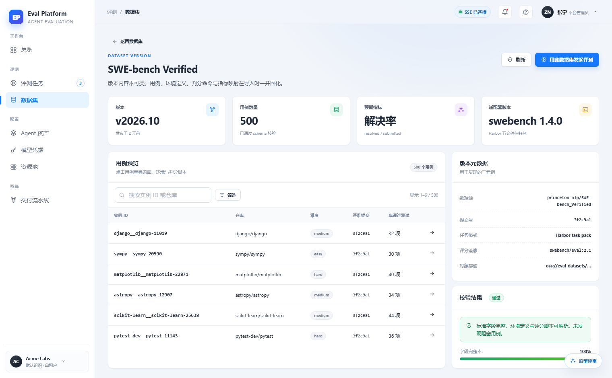
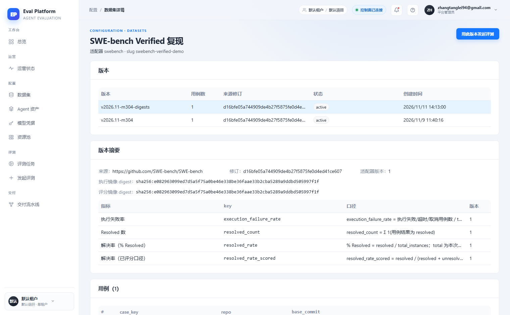
- 【严重】原型用例表支持搜索/难度筛选/分页（500 用例场景）；线上为平铺原始表（case_key/repo/base_commit），无搜索、筛选、分页，规模一大数据不可浏览。
- 【中】原型“校验结果通过 / 字段完整率 100%”与刷新、难度标签缺失——导入质量状态线上不可见。
- 【低·增强】线上以显式指标定义表公开口径（resolved_rate 等），比原型更完整；支持多版本管理。
4.3 导入向导
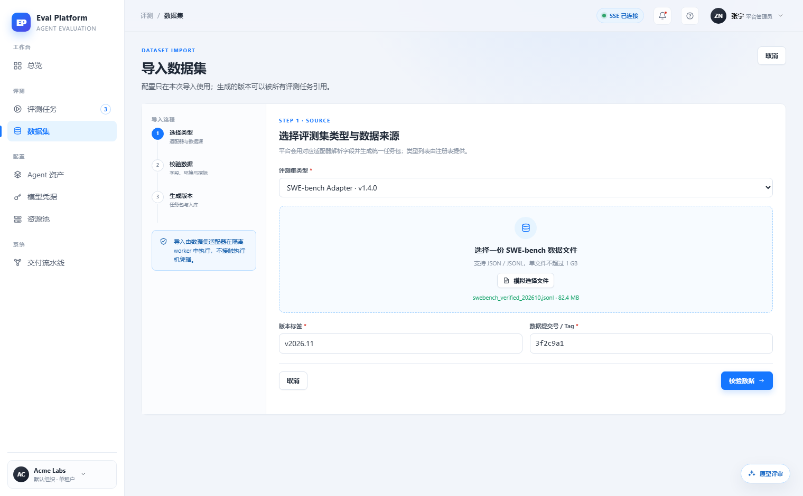
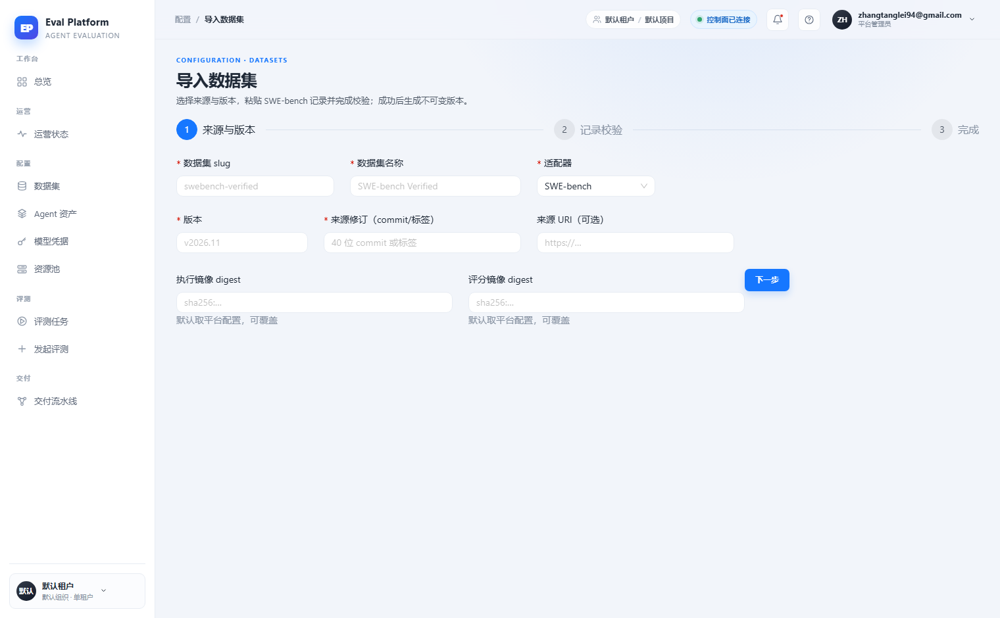
- 【严重】原型第一步是上传数据文件（JSON/JSONL ≤1GB）→ 隔离 worker 解析校验；线上为纯元信息表单（slug/适配器/来源 URI/镜像 digest），无文件上传区，核心“上传→解析→校验”流程缺失。
- 【中】步骤条从左侧竖向（含说明）改为顶部横向；隔离执行安全提示缺失；无显式取消入口。
- 【低·增强】线上新增 slug、镜像 digest 覆盖等后端对齐字段。
5. 配置类页面（模型凭据 / Agent 资产 / 资源池）⚠️
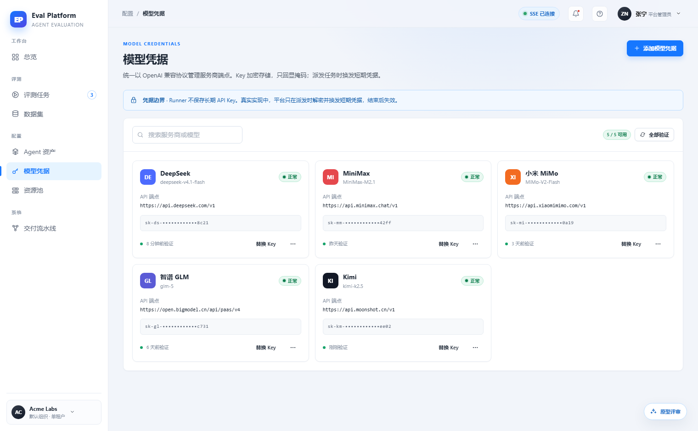
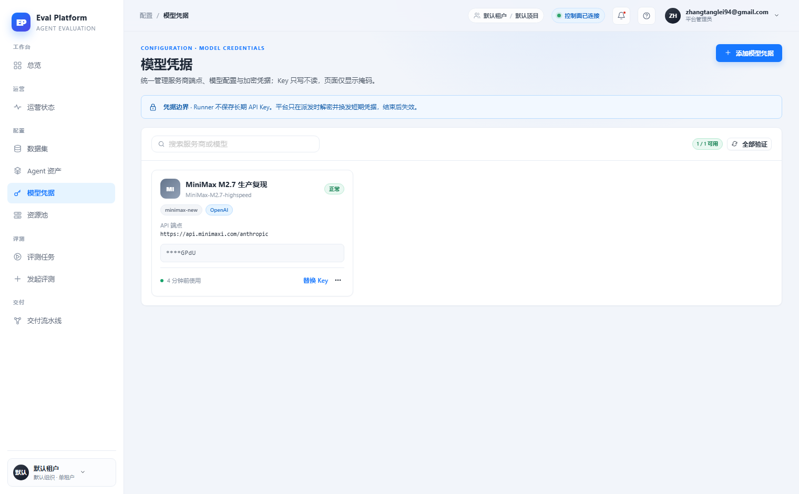
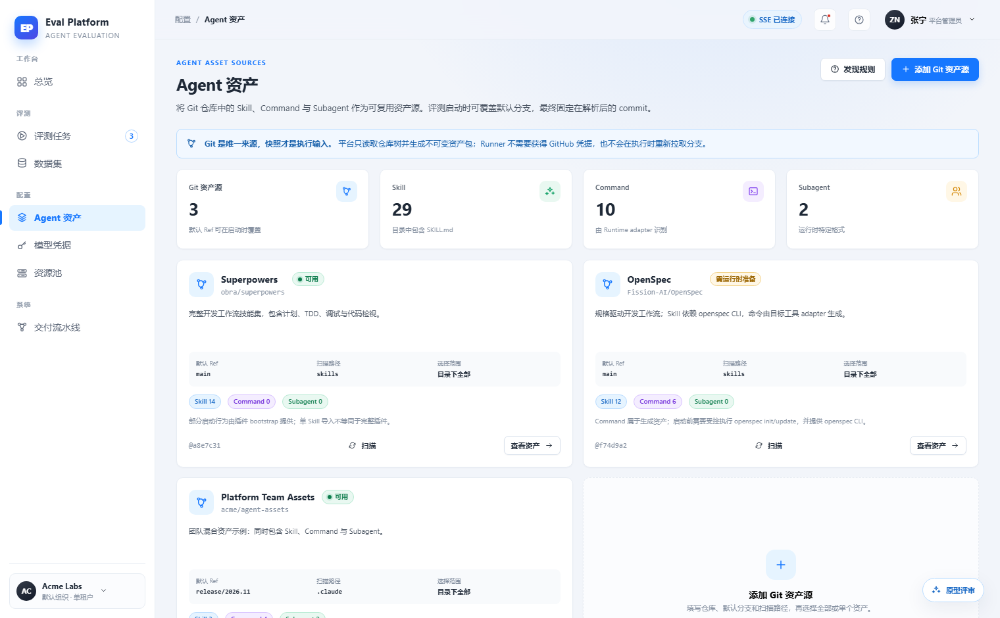
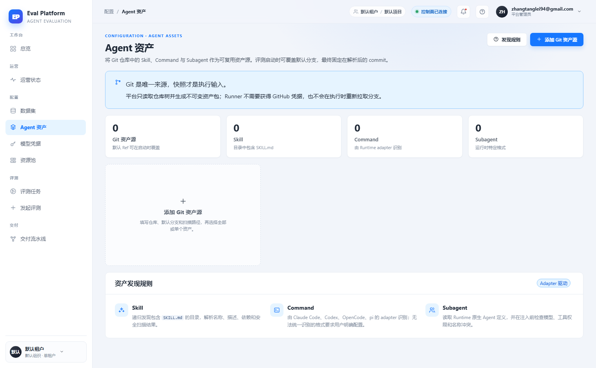
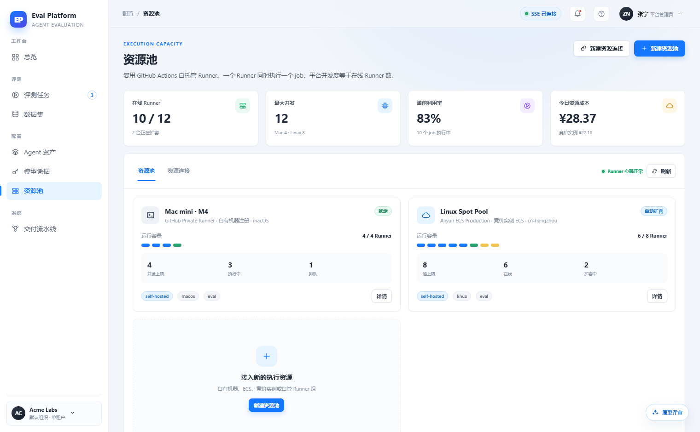

- 模型凭据：骨架高度一致（凭据边界提示条、掩码 Key、替换 Key）。【中】原型“未授权角色锁定态”未见卡片级表达；【中】搜索无结果空态未确认。
- Agent 资产：统计卡、“Git 是唯一来源”、添加源流程文案一致。【严重】线上无资产源卡片列表（状态标签/默认 Ref/commit 快照/扫描·查看资产操作），当前环境数据全为 0，需验证是结构缺失还是空态；【中】“运行时前置缺失”（OpenSpec）边界状态未见。
- 资源池：统计卡 + 双页签结构一致。【中】原型“利用率 / 今日成本 / 彩色容量分段（含排队黄色）”被“池上限/在线/忙碌/扩容中”原始数值替代，容量不足与排队风险可视化弱化（违背 README 状态矩阵“容量不足”表达）；【中】资源连接“密钥锁定态 + 权限申请”未见；【低·增强】线上新增编辑、心跳/检查时间、价格阈值等真实运维字段。
6. 评测流程 — 结果侧能力明显缩水 ❌
6.1 任务列表
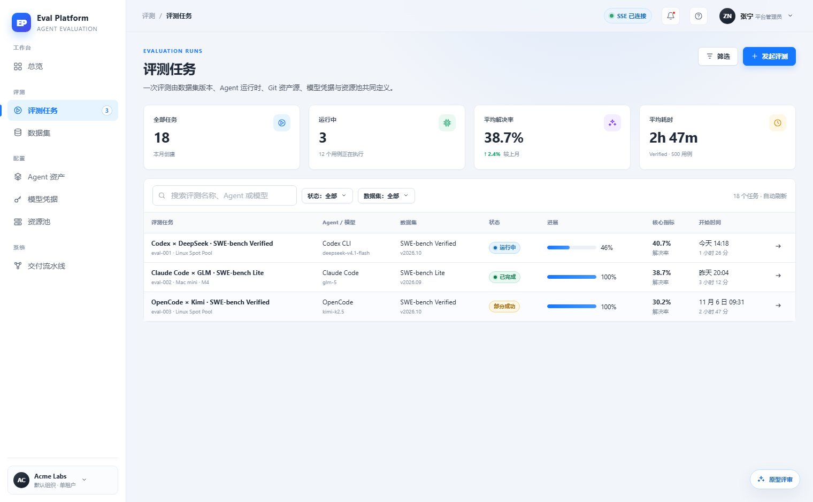
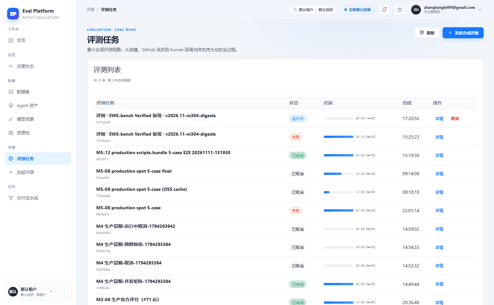
- 【严重】原型顶部统计卡 + 搜索 + 状态/数据集筛选缺失，任务多时只能滚动查找。
- 【严重】列表列缺 Agent/模型、数据集版本、核心指标（解决率）——横向对比评测效果的信息缺失。
- 【中】原型有“部分成功”状态；线上仅运行中/失败/已完成/已取消，部分失败任务可能被笼统表达（违背“避免伪装成全量成功”设计取舍）。
- 【低·增强】线上行内“取消”更直接。
6.2 发起评测向导
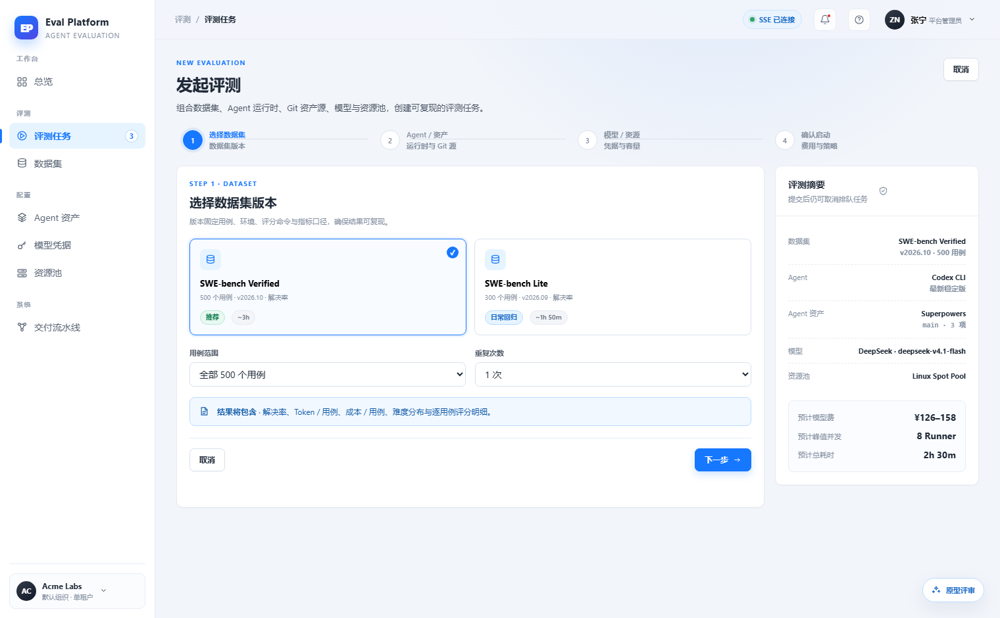
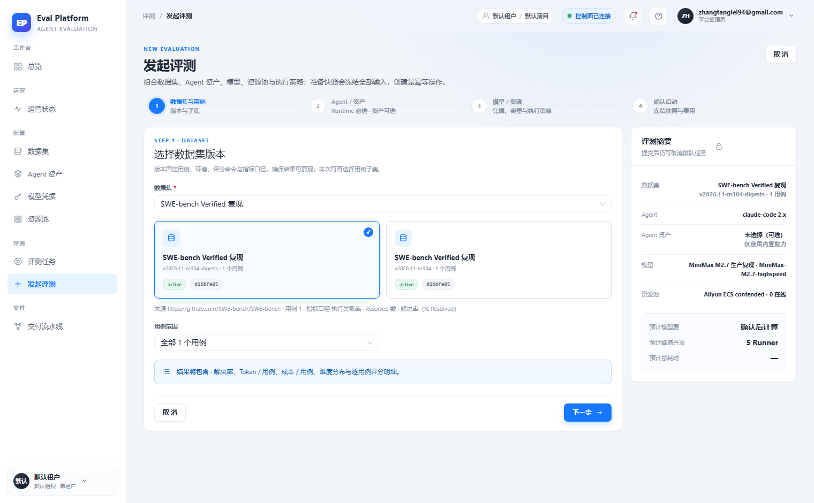
- 一致：四步 Stepper 命名、左步骤 + 右“评测摘要”双栏、数据集卡片选择、用例范围。
- 【中】原型摘要含预计费用 ¥126-158 / 峰值并发 / 总耗时；线上“确认后计算 / —”，启动前无成本预期（关联 m5-10 计费特性未接入前端）。
- 【中】原型 Agent 资产必选；线上改为“可选（仅使用内置能力）”——流程语义变化，建议确认设计意图。
- 【低】数据集选择从双卡片改为“下拉选数据集 → 选版本卡片”，更贴合真实数据但引导性弱。
6.3 评测详情
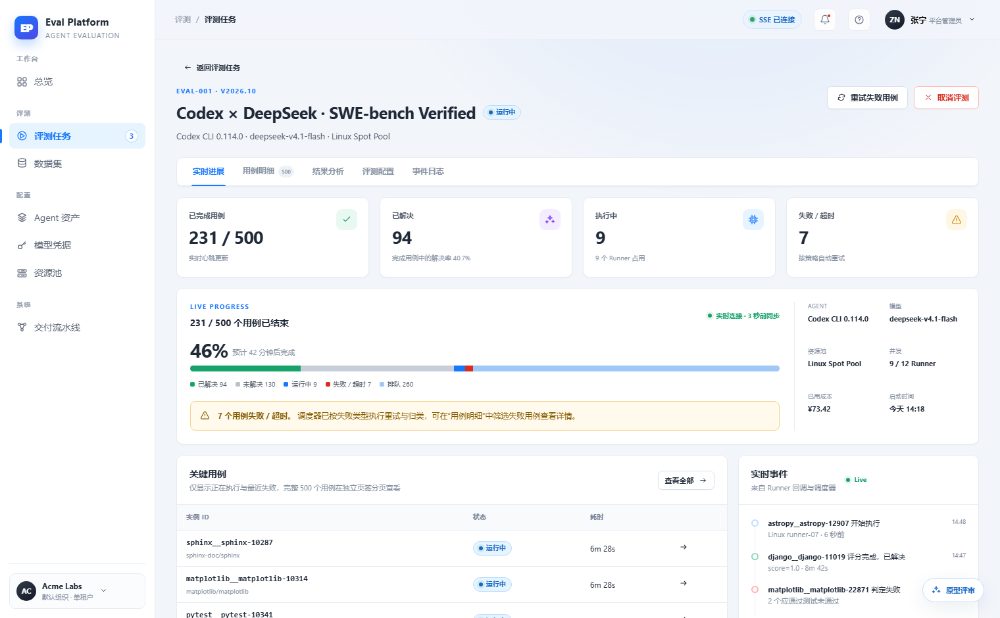
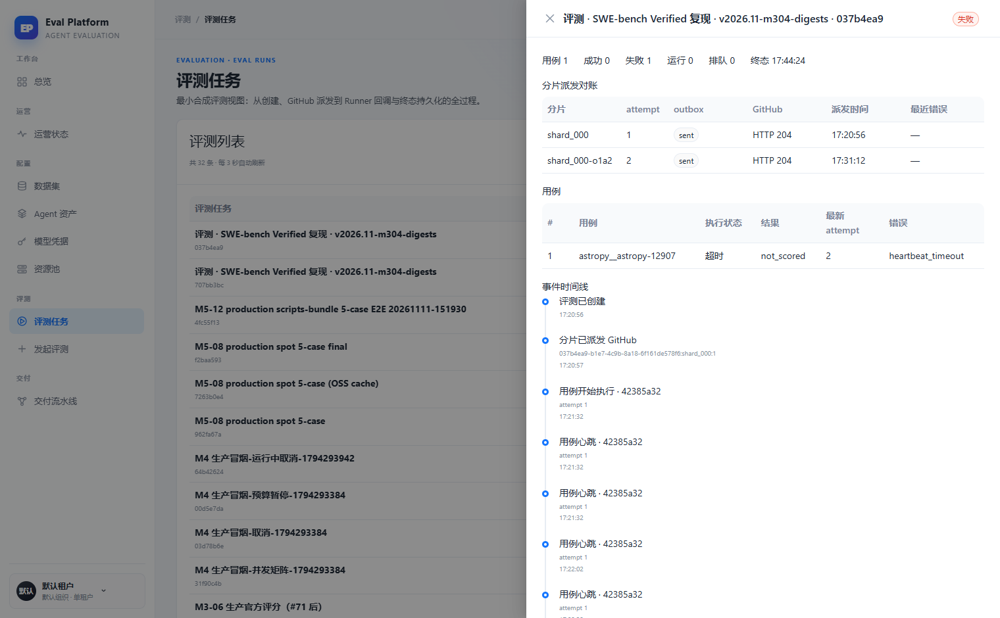
- 【严重】原型为独立路由详情页，五个页签（实时进展/用例明细/结果分析/评测配置/事件日志）；线上是列表页右侧 Drawer 单列堆叠。
routes.tsx的/evals/:id与EvalDetailPage.tsx存在但入口不可达（死代码）。 - 【严重】原型 4 张统计卡 + 状态堆叠进度条（图例/预计完成/失败警示）+ 模型/资源池/并发/成本面板；线上仅一行文本计数，解决率、成本、分状态堆叠全部缺失。
- 【中】无“重试失败用例”；用例表无分页（20/50/100）/状态筛选/搜索；“部分成功”表达缺失。
- 【低·增量】线上多出“分片派发对账”表（shard/attempt/outbox/GitHub）与 attempt 级心跳时间线，是针对真实调度链路的高价值增强，建议反哺原型。
6.4 会话轨迹 — 整页缺失 ❌
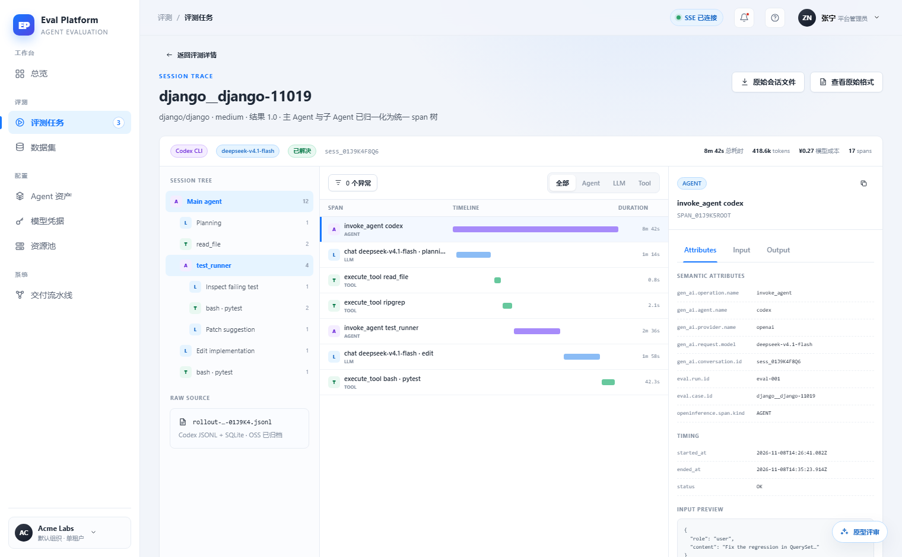
- 线上无任何对应路由。原型三栏结构（左会话树 + 中 span waterfall + 右 gen_ai.* 属性）及“轨迹降级保留原始 JSONL/SQLite 入口”均无落点。
- 影响：README 主路径“点击用例进入会话轨迹”断裂，失败根因（如 heartbeat_timeout）无法定位；M6 系列采集/归一化特性在前端没有出口。
7. 交付流水线与运营状态 ❌➕

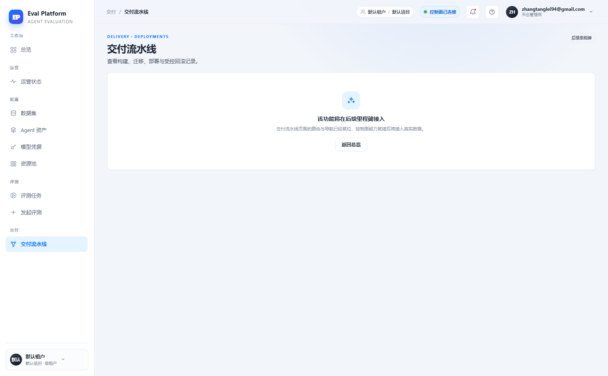
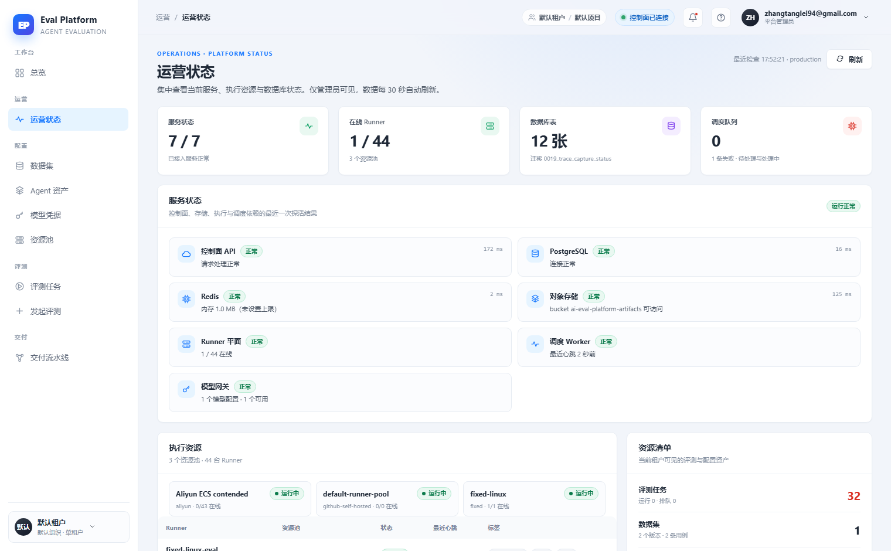
- 【严重】线上
/deployments为占位页：五阶段流水线时间线、部署历史、回滚危险操作全部缺失（关联 m2-02 特性）。 - 【中】原型部署页内嵌的环境健康（ECS/RDS/OSS/Redis）被拆分为独立
/operations“运营状态”页（7/7 服务状态、数据库迁移、调度队列，RequireAdmin + 30s 刷新）——架构拆分合理，但“部署健康与版本/回滚同页”的用户心智路径变化。
8. 差异总表（按严重度）
| # | 页面 | 差异 | 严重度 | 性质 |
|---|---|---|---|---|
| 1 | 会话轨迹 | 整页/路由缺失，轨迹查看链路断裂 | 严重 | 疑似部署滞后（m6-05 已在 main） |
| 2 | 交付流水线 | 占位页，流水线/历史/回滚缺失 | 严重 | 阶段性未实现（m2-02 已开发） |
| 3 | 数据集目录 | 卡片目录→简单表格，筛选/分页/指标全无 | 严重 | 结构性偏离 |
| 4 | 数据集详情 | 用例表无搜索/筛选/分页 | 严重 | 结构性偏离 |
| 5 | 数据集导入 | 文件上传→解析校验流程缺失 | 严重 | 结构性偏离 |
| 6 | 评测详情 | 独立页→Drawer；指标/结果分析/重试缺失；死路由 | 严重 | 结构性偏离 + 部署滞后 |
| 7 | 评测列表 | 统计卡/筛选/解决率列缺失；“部分成功”缺失 | 严重 | 部分滞后 + 部分偏离 |
| 8 | 发起评测 | 成本预估缺失；资产改可选 | 中 | 滞后 + 待确认的设计变更 |
| 9 | 总览 | 解决率/成本指标缺失；运行下钻卡缺失 | 中 | 滞后 |
| 10 | 资源池 | 成本/利用率/排队可视化弱化；锁定态缺失 | 中 | 表达偏离 |
| 11 | Agent 资产 | 源卡片结构未验证（环境空数据） | 严重(待验证) | 待验证 |
| 12 | 模型凭据 | 权限锁定态、空态未确认 | 中 | 待验证 |
| 13 | 运营状态 | 新增页，原型无对应 | 增量 | 合理增强 |
| 14 | 评测详情 | 分片派发对账 + attempt 时间线 | 增量 | 高价值增强，建议反哺原型 |
9. 建议优先级
- 核实部署版本：线上显示“M3 建设中”，先确认 47.98.144.243 是否落后于 main——轨迹页、详情页、成本指标等差异可能随部署收窄。
- 补齐结果侧：评测详情恢复独立路由/直链（清理或启用
/evals/:id），接入解决率、成本、状态堆叠、重试；用例明细分页/筛选/搜索。 - 补齐轨迹查看器（m6-05）部署与入口：从评测详情用例行进入会话轨迹。
- 数据集域重构对齐原型：目录卡片化 + 筛选分页；详情用例浏览；导入文件上传→校验流程。
- 交付流水线页（含回滚危险操作说明）按原型补齐。
- 边界状态补课：空态（凭据搜索无结果）、无权限锁定态（连接密钥）、运行时前置缺失（OpenSpec）、容量不足排队风险可视化。
- 确认两个设计变更是否有意：数据集从“评测”移入“配置”分组；发起评测资产改可选。
10. 方法说明
- 原型：
prototype/index.html经无头 Chrome 按 hash 路由逐页截图（登录态内存注入）。 - 线上：无头 Chrome 使用真实账号登录，遍历侧边栏全部路由；数据集详情与评测详情通过点击行/按钮进入（评测详情为 Drawer）。
- 差异结论均结合
web/src/pages/*、web/src/app/routes.tsx源码交叉确认，避免把环境数据差异误判为设计差异。